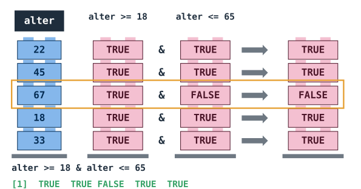
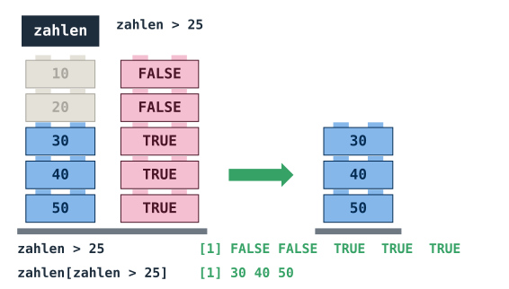

var1 <- 2 * 4
var1[1] 8In Kap. 1 hast du RStudio eingerichtet, in Kap. 2 dein erstes Quarto-Dokument gebaut. Jetzt geht es an die Sprache, in der du in diesem Buch alles formulierst: R. Variablen, Funktionen, Datentypen und der Pipe-Operator sind die Bausteine, mit denen du in den folgenden Kapiteln Datensätze einliest, transformierst, analysierst und visualisierst.
Anders als die SPSS-Syntax — die im Kern eine Befehlssprache mit festem Vokabular ist — schreibst du in R selbst Funktionen, baust Werte zu Vektoren, kombinierst sie zu Datensätzen. Diese kleine Hürde am Anfang zahlt sich später aus: dieselben Bausteine tragen dich vom Einstieg bis zur Bachelorarbeit.
Forschungsjournal: Wo stehst du in deiner Mini-Studie? Du hast in Kapitel 1 die IDE eingerichtet und in Kapitel 2 den Berichts-Workflow verstanden. Jetzt lernst du die Sprachelemente, mit denen du gleich Survey-Items rekodierst, Skalen baust und Modelle rechnest. Beispiele in diesem Kapitel sind bewusst sozial- und politikwissenschaftlich gewählt — du wirst dieselben Operationen ab Kapitel 4 auf echte ALLBUS-Variablen anwenden.
#-Kommentaren für dein zukünftiges Ich verständlich halten.==, &, %in%, …) einsetzen.NA) umgehen und sie aus Berechnungen ausschließen.|> lesen und schreiben.|> und dem älteren %>% aus magrittr einordnen.<-
Eine Variable speichert einen Wert. In R weist du Werte über den Zuweisungspfeil <- zu:
var1 <- 2 * 4
var1[1] 8var1 (links) ist der Variablenname; 2 * 4 (rechts) der Ausdruck, dessen Ergebnis (8) gespeichert wird.
R rechnet also zuerst 2 * 4 aus und legt das Ergebnis unter dem Namen var1 im Environment ab (Abbildung 3.1). Wo danach var1 steht, setzt R den Wert 8 ein. In den Abbildungen ist ein Wert ein Stein und ein Name ein dunkles Schild; mehr zu dieser Bildsprache in Kapitel 3.5.
var1 <- 2 * 4 legt das Ergebnis 8 unter dem Namen var1 im Environment ab. Danach gibt var1 den Wert 8 aus.
Wenn du die Zuweisung in runde Klammern setzt, wird das Ergebnis gleichzeitig in der Konsole angezeigt:
(var2 <- 2 * 4)[1] 8Vorsicht: <- statt =. Aus anderen Programmiersprachen kennst du = als Zuweisungsoperator. R akzeptiert es in vielen Kontexten, der idiomatische Operator ist aber <-. Grund: = wird in R innerhalb von Funktionsaufrufen für Argumente verwendet (mean(x = data)). Wenn du <- für Zuweisung und = für Argumente strikt trennst, vermeidest du subtile Fehler.
Tastenkürzel für <-: option + - (macOS) bzw. alt + - (Windows/Linux).
R führt Code von oben nach unten aus, Zeile für Zeile. Was in einer Variablen steht, hängt deshalb davon ab, welche Zeilen vorher gelaufen sind:
x <- 5
y <- x + 2
x <- 10
y[1] 7y ist 7, obwohl x am Ende 10 ist. In Zeile 2 rechnet R x + 2 mit dem Wert, den x in diesem Moment hat, und legt das Ergebnis 7 unter y ab. Die Rechnung selbst merkt sich R nicht, darum ändert Zeile 3 nichts an y (Abbildung 3.2). Auch die Chunks eines Quarto-Dokuments laufen beim Rendern von oben nach unten.
x; y behält den Wert 7.
Kurz überlegen. Welchen Wert hat a nach diesen drei Zeilen: a <- 3, a <- a + 1, a <- a * 2?
a <- 3
a <- a + 1
a <- a * 2
a[1] 8a ist erst 3, nach der zweiten Zeile 4 und nach der dritten 8. Rechts vom Pfeil rechnet R mit dem Wert, den a gerade hat; links legt es das Ergebnis unter demselben Namen ab und ersetzt damit den alten Wert.
Eine Variable muss mit einem Buchstaben beginnen und darf danach Buchstaben, Zahlen, Punkte (.) und Unterstriche (_) enthalten. Leerzeichen sind nicht erlaubt.
Für lesbaren Code halten sich Sozialwissenschaftler:innen meist an eine von zwei Konventionen:
snake_case — alles klein, Worte mit Unterstrich verbunden: mittelwert_alter. Tidyverse-Standard.camelCase — erstes Wort klein, weitere groß beginnend: mittelwertAlter. Verbreitet im Stata- und JavaScript-Umfeld.Wähle eine und bleibe konsequent. In diesem Buch nutzen wir snake_case.
# Gut
mittelwert_alter
faktor_skala
islamophobie_skala
# Schlecht (inkonsistent)
Mittelwert.alter
mittelwertAlter_neu
# Verboten (Leerzeichen)
mittelwert alter#
Alles, was hinter einem # steht, wird von R ignoriert — du nutzt das, um deinen Code zu erklären:
# Stichprobengröße der Mini-Studie
n_befragte <- 5246 # ALLBUS 2023, gesamtKommentare sind das, was deinem zukünftigen Ich (oder Reviewer:innen) den Code in drei Wochen wieder verständlich macht. Schreibe sie für die Frage Warum? — nicht für das, was der Code ohnehin schon sagt.
„Everything that exists is an object. Everything that happens is a function call.” — John Chambers
Eine Funktion ist ein benanntes Werkzeug, dem du Argumente übergibst und das ein Ergebnis zurückgibt. Eine generische Funktion sieht so aus:
funktionsname(arg1 = wert1, arg2 = wert2, ...)funktionsname — was die Funktion macht.arg1, arg2 — wie sie ihre Arbeit konfiguriert.arg1 = wert1) oder positional übergeben werden.Einige Argumente haben Default-Werte: sie müssen nicht angegeben werden, weil der häufigste Wert voreingestellt ist.
seq(from = 1, to = 10, by = 2) # explizit[1] 1 3 5 7 9seq(1, 10, 2) # positional, identisch[1] 1 3 5 7 9Beide Aufrufe geben dieselben fünf Zahlen zurück. Abbildung 3.3 zeigt den ersten: Die Werte der drei Argumente gehen in seq(), heraus kommen die Zahlen 1, 3, 5, 7 und 9. In den Abbildungen sind Funktionen grün und Argumente orange markiert.
seq() bekommt drei Argumente und gibt fünf Zahlen zurück.
Wenn du die Argumente einer Funktion vergessen hast, gibt ?funktion (z. B. ?seq) die Hilfe in RStudio aus. Innerhalb der Klammern öffnet Tab ein Dropdown mit allen Argumenten.
c(), seq() und round()
| Funktion | Wirkung |
|---|---|
c(...) |
erzeugt einen Vektor aus den Argumenten (combine) |
seq(from, to, by) |
erzeugt eine Sequenz |
1:5 |
reguläre Sequenz (1, 2, 3, 4, 5) |
rep(x, times, each) |
wiederholt x
|
head(x, n) |
die ersten n Elemente |
tail(x, n) |
die letzten n Elemente |
length(x) |
Anzahl der Elemente |
round(x, digits) |
rundet Zahlen |
[1] 1 2 3seq(from = 1, to = 10, by = 2)[1] 1 3 5 7 9rep(x = 0, times = 5)[1] 0 0 0 0 0[1] 1.2 2.3 4.0In der letzten Zeile bekommt round() zwei Argumente (Abbildung 3.4). x ist ein Pflichtfeld: Ohne x weiß round() nicht, was es runden soll. digits hat den Default-Wert 0; ohne Angabe rundet round() also auf ganze Zahlen. Hier setzt du digits auf 1.
round() als Felder eines Formulars: x muss ausgefüllt werden, digits ist mit 0 vorausgefüllt und wird hier mit 1 überschrieben.
Kurz überlegen. Was geben round(digits = 1, x = 1.222) und round(1, 1.222) aus?
Mit Namen ist die Reihenfolge egal: R setzt 1.222 in das Feld x und 1 in digits, das Ergebnis ist 1.2. Ohne Namen zählt die Position. Im zweiten Aufruf landet 1 im ersten Feld x und 1.222 in digits; R rundet also die Zahl 1 und gibt 1 zurück.
Drei Gruppen von Operatoren brauchst du immer wieder.
+, -, *, /, ^ und %%
| Operator | Wirkung |
|---|---|
+ |
Addition |
- |
Subtraktion |
* |
Multiplikation |
/ |
Division |
^ |
Potenzieren |
%% |
Modulo (Rest) |
==, !=, <, > und %in%
Sie geben einen logischen Wert TRUE/FALSE zurück.
| Operator | Wirkung |
|---|---|
== |
gleich |
!= |
ungleich |
<, <=
|
kleiner (gleich) |
>, >=
|
größer (gleich) |
%in% |
enthalten in Menge |
Vorsicht: == ist nicht =. Für Vergleiche verwendest du immer == (doppeltes Gleichheitszeichen). Einzelnes = ist für Funktionsargumente reserviert — mean(x = data) setzt x, vergleicht aber nichts.
&, | und !
Sie verknüpfen Wahrheitswerte.
| Operator | Wirkung |
|---|---|
& |
UND |
| |
ODER |
! |
NICHT |
Ein kleines Beispiel:
alter <- c(22, 45, 67, 18, 33)
alter > 30[1] FALSE TRUE TRUE FALSE TRUEalter >= 18 & alter <= 65[1] TRUE TRUE FALSE TRUE TRUE[1] TRUE FALSE FALSE FALSE TRUEAbbildung 3.5 zeigt die dritte Zeile Stein für Stein. alter >= 18 ist für alle fünf Werte TRUE, alter <= 65 für alle außer 67. & verknüpft die beiden Wahrheitstürme Reihe für Reihe und ergibt nur dort TRUE, wo beide Steine TRUE sind.
& verknüpft die beiden Türme Reihe für Reihe.
Diese Operatoren wirst du in Kap. 4 ständig brauchen, wenn du Fälle mit filter() auswählst.
In R ist alles ein Objekt — ein Wert, ein Datensatz, ein statistisches Modell, sogar eine Funktion. Die wichtigsten Datentypen für sozialwissenschaftliche Arbeit stellen die folgenden Abschnitte vor.
Damit du siehst, was R mit deinen Daten macht, zeigen die Abbildungen Daten als Bausteine (Abbildung 3.6). Ein einzelner Wert ist ein Stein, seine Farbe zeigt den Datentyp. Mehrere Steine übereinander sind ein Vektor, also ein Turm; gleich hohe Türme nebeneinander auf einer Bauplatte sind ein Datensatz. Ein leerer, gestrichelter Stein steht für einen fehlenden Wert, ein gelber Aufkleber für ein Wertelabel (Kapitel 4). Im Code sind Objekte dunkel, Funktionen grün und Argumente orange markiert.
![Legende der Bildsprache. Ein blauer Stein mit 1 steht für eine Zahl (numeric), ein lila Stein mit „Anna“ für Text (character), ein rosa Stein mit TRUE für einen Wahrheitswert (logical), ein leerer gestrichelter Stein für einen fehlenden Wert (NA), ein blauer Stein mit gelbem Aufkleber MANN für eine Zahl mit Wertelabel. Ein Turm aus drei blauen Steinen mit dem Namensschild zahlen, beschriftet Name, ist ein Vektor. Zwei Türme geschlecht und alter auf einer Bauplatte sind ein Datensatz; eine markierte Reihe ist ein Fall, ein Turm eine Variable. Darunter Code-Bausteine: zahlen dunkel als Objekt, round grün als Funktion, digits = 1 orange als Argument.](Bilder/figuren/k03-legende.svg)
[ ]
Ein Vektor ist eine eindimensionale Sammlung gleicher Datentypen. Drei Typen wirst du am häufigsten sehen:
Abbildung 3.7 zeigt die drei Vektoren als Türme. Jeder Turm hat nur eine Farbe, denn ein Vektor enthält Werte eines einzigen Datentyps. Der erste Wert steht oben; der fehlende Wert in flags ist ein leerer Stein.
Vorsicht: TRUE/FALSE schreiben, nicht T/F. Die Kurzschreibweisen funktionieren — sind aber überschreibbar, deshalb in der Praxis fehleranfällig. Schreibe immer TRUE und FALSE aus.
Mit Indizes greifst du auf einzelne Elemente zu:
zahlen[1] # erstes Element[1] 1zahlen[2:4] # zweites bis viertes[1] 2 3 4zahlen[-1] # alle ausser dem ersten[1] 2 3 4 5Statt mit Positionen kannst du auch mit Bedingungen indizieren. Bei dieser booleschen Indizierung übergibst du einen logischen Vektor (TRUE/FALSE) gleicher Länge, und R behält nur die TRUE-Positionen:
zahlen <- c(10, 20, 30, 40, 50)
zahlen > 25 # gibt TRUE/FALSE-Vektor zurück[1] FALSE FALSE TRUE TRUE TRUEzahlen[zahlen > 25] # behält nur Werte > 25[1] 30 40 50zahlen[!is.na(zahlen)] # behält nur Nicht-NA-Werte[1] 10 20 30 40 50zahlen > 25 ergibt einen Turm aus Wahrheitswerten, der so hoch ist wie zahlen. In zahlen[zahlen > 25] legt R ihn wie eine Schablone neben zahlen und behält nur die Steine, neben denen TRUE steht (Abbildung 3.8).
zahlen > 25 wählt die Steine aus. Die grauen Steine neben FALSE fallen weg.
Diese Logik ist exakt das, was tidyverse-Funktionen wie filter() (Kap. 4) intern machen. Wer hier sicher ist, versteht filter(allbus, age > 30) sofort.
Wenn du in R zahlen * 2 schreibst, wird die Operation auf jedes Element angewendet — du bekommst c(20, 40, 60, 80, 100) zurück. Das nennt sich Vektorisierung und ist eines der Power-Features von R. Du musst fast nie eine for-Schleife schreiben, um eine Operation auf vielen Werten auszuführen.
Wenn zwei Vektoren unterschiedlicher Länge kombiniert werden, wiederholt R den kürzeren stillschweigend (Recycling):
Abbildung 3.9 zeigt, welche Werte R wiederholt: Bei zahlen * 2 nimmt R dieselbe 2 für jeden der fünf Steine, bei c(1, 2, 3, 4) + c(10, 20) nimmt es 10 und 20 ein zweites Mal.
![Zwei Beispiele. Links zahlen * 2: der Turm zahlen mit 10, 20, 30, 40 und 50, daneben in jeder Reihe ein * und ein Stein 2; die oberste 2 ist kräftig blau, die vier darunter sind blass. Pfeile führen zum Ergebnis 20, 40, 60, 80, 100, darunter die Ausgabe [1] 20 40 60 80 100. Rechts c(1, 2, 3, 4) + c(10, 20): der Turm 1, 2, 3, 4, daneben in jeder Reihe ein + und die Steine 10 und 20, darunter blass noch einmal 10 und 20. Das Ergebnis ist 11, 22, 13, 24, darunter die Ausgabe [1] 11 22 13 24.](Bilder/figuren/k03-recycling.svg)
Das ist absichtliches Verhalten — und genau die Anfänger:innen-Falle, die zu falschen Ergebnissen führt. Wenn du dir nicht sicher bist, prüfe mit length(), dass beide Vektoren gleich lang sind.
Was passiert, wenn du in c() verschiedene Datentypen mischst? R wandelt dann alle Werte in einen gemeinsamen Typ um. Diese Typumwandlung (englisch coercion) geschieht ohne Warnung:
Im ersten Vektor wird TRUE zu 1 und FALSE zu 0; das Ergebnis ist numeric. Im zweiten wird alles zu Text, auch die Zahl und der Wahrheitswert. R wählt immer den Typ, der alle Werte aufnehmen kann, in der Rangfolge logical, numeric, character (Abbildung 3.10). Umgekehrt geht das nicht: "Anna" lässt sich in keine Zahl umwandeln. Weil jede Spalte eines Datensatzes ein Vektor ist, hat auch sie genau einen Datentyp.
Kurz überlegen. Was ergibt c(TRUE, "ja"), und welchen Datentyp hat das Ergebnis?
c(TRUE, "ja")[1] "TRUE" "ja" Beide Werte werden zu Text, "TRUE" und "ja". Der Vektor ist character, weil character in der Rangfolge nach logical kommt.
factor(), levels() und fct_relevel()
Ein Faktor ist ein Vektor mit definierten Ausprägungen (levels) — für kategoriale Variablen wie Geschlecht oder Bildung. Warum nicht einfach ein Character-Vektor? Drei Gründe:
Abbildung 3.11 zeigt, was in geschlecht steckt: Intern speichert R für jeden Wert eine Zahl, hier 1, 2, 1, 3, und levels legt fest, für welche Ausprägung jede Zahl steht. Die erste Stufe, Mann, ist die Referenzkategorie.
geschlecht: R speichert intern die Zahlen 1 bis 3, levels ordnet ihnen die Ausprägungen in fester Reihenfolge zu. Die erste Stufe ist die Referenz.
Kurz überlegen. In welcher Reihenfolge stehen die Stufen von factor(c("niedrig", "hoch", "mittel")), wenn du levels weglässt?
Mit relevel() (Base R) oder forcats::fct_relevel() (tidyverse) änderst du die Reihenfolge nachträglich. forcats ist Teil des tidyverse und liefert ein ganzes Set an Faktor-Werkzeugen (fct_recode(), fct_lump(), fct_reorder()) — du brauchst sie spätestens bei Grafiken in Kap. 6.
haven_labelled vs. Faktor
Wenn du Daten aus SPSS einliest (Kap. 4), bekommst du Spalten vom Typ <haven_labelled>. Das ist kein Faktor — sondern ein numerischer Vektor mit Labels als Begleitinformation. Mit to_label() (mariposa) wandelst du sie bei Bedarf in einen klassischen Faktor.
tibble(), $ und [[ ]]
Ein Tibble ist die moderne Form des Data Frames im tidyverse — eine Tabelle mit Zeilen (Fälle) und Spalten (Variablen). Du baust es mit tibble():
# A tibble: 4 × 2
geschlecht alter
<fct> <dbl>
1 Mann 34
2 Frau 41
3 Mann 28
4 Divers 52Ein Tibble ist eine Bauplatte mit gleich hohen Türmen (Abbildung 3.12). Jede Spalte ist ein Turm mit einem Datentyp, jede Reihe ein Fall, hier eine befragte Person.
befragte als Bauplatte: zwei Türme (Variablen) und vier Reihen (Fälle).
Auf eine einzelne Spalte greifst du mit $ oder [[]] zu:
befragte$alter[1] 34 41 28 52befragte[["alter"]][1] 34 41 28 52befragte[1, "alter"] # erste Zeile, Spalte "alter"# A tibble: 1 × 1
alter
<dbl>
1 34$ und [[ ]] geben dieselbe Spalte zurück. Der Unterschied liegt in der Bedienung:
$alter ist kompakter, ideal für interaktive Konsole und Skripte.[["alter"]] akzeptiert den Spaltennamen als String — unverzichtbar, wenn der Spaltenname in einer Variable steckt (spalte <- "alter"; befragte[[spalte]]).In der Praxis liest du Datensätze fertig aus SPSS-, Stata- oder Excel-Dateien ein (siehe Kap. 4). Selbst-gebaute Tibbles brauchst du fast nur für kleine Demonstrationen.
list()
Eine Liste kann verschiedene Objekttypen unterschiedlicher Länge sammeln. Ergebnisse statistischer Analysen sind in R meistens Listen — ein Regressionsergebnis enthält Koeffizienten, Residuen, Modellgüte usw. Du musst sie selten selbst erstellen, aber regelmäßig lesen können:
[1] 0.42ergebnis$konfidenz[1][1] 0.31Eine Liste ist eine Kiste mit Fächern (Abbildung 3.13). Jedes Fach hat einen Namen und kann Werte eines anderen Typs und einer anderen Länge enthalten. ergebnis$konfidenz[1] greift in zwei Schritten zu: $konfidenz nimmt den Turm aus seinem Fach, [1] davon den ersten Stein.
ergebnis als Kiste mit vier Fächern. ergebnis$konfidenz[1] holt erst den Turm aus dem Fach konfidenz und davon den ersten Wert.
NA, is.na() und na.rm
In echten Datensätzen fehlen oft einzelne Werte — eine Befragte hat eine Frage übersprungen, ein Messwert war ungültig, eine Auskunft wurde verweigert. R kodiert das mit einem speziellen Wert: NA (Not Available).
x <- c(1, 2, NA, 4, 5)
x[1] 1 2 NA 4 5is.na(x) # welche Elemente sind NA?[1] FALSE FALSE TRUE FALSE FALSESPSS unterscheidet system-missing (leeres Feld) von user-missing (z. B. „keine Angabe” als Code -9). In R gibt es per Default nur ein generisches NA — beim SPSS-Import behält mariposa die user-missing-Codes aber als tagged NA, sodass du den Grund des Fehlens jederzeit nachschauen kannst. Mehr dazu in Kap. 4.
Rechnungen mit NA ergeben NA. Das ist Absicht: der Mittelwert von „1, 2, ?, 4, 5” ist eigentlich unbekannt.
Damit Funktionen wie mean(), sd() & Co. trotzdem rechnen, übergibst du na.rm = TRUE:
Abbildung 3.14 zeigt die beiden Aufrufe von mean(). Mit dem leeren Stein im Turm gibt mean(x) selbst NA zurück. Mit na.rm = TRUE lässt mean() den fehlenden Wert weg und rechnet mit den übrigen vier: (1 + 2 + 4 + 5) / 4 = 3.
![Links der Turm x aus fünf Steinen: blau 1 und 2, ein leerer gestrichelter Stein NA, blau 4 und 5. Ein Pfeil führt zu mean(x); das Ergebnis ist ein leerer Stein NA mit der Ausgabe [1] NA. Ein zweiter Pfeil führt zu mean(x, na.rm = TRUE), na.rm = TRUE orange markiert; das Ergebnis ist ein blauer Stein 3 mit der Ausgabe [1] 3.](Bilder/figuren/k03-na.svg)
x mit einem fehlenden Wert. mean(x) ergibt NA, mean(x, na.rm = TRUE) den Mittelwert der vier vorhandenen Werte.
Vorsicht: NA als Ergebnis ist kein Fehler. Wenn mean(daten$age) plötzlich NA zurückgibt, hat R keine Fehlermeldung — es rechnet brav weiter und gibt NA aus. Das ist der häufigste „mein Output sieht komisch aus”-Fehler bei Anfänger:innen. Zwei Diagnosen helfen:
Heilmittel: na.rm = TRUE an die Berechnung, oder die fehlenden Fälle gezielt mit filter(!is.na(age)) ausschließen.
R erlaubt es, Funktionen ineinander zu verschachteln — der Output einer Funktion wird zum Input der nächsten:
Das funktioniert, aber je mehr Schritte du verschachtelst, desto schwerer wird der Code zu lesen — du musst ihn von innen nach außen lesen, was unserer natürlichen Leserichtung widerspricht. Für genau dieses Problem gibt es eine elegante Lösung: den Pipe-Operator. Ein Pipe verkettet Funktionsaufrufe linear, statt sie zu verschachteln. R kennt zwei Varianten — wir nutzen die native Pipe |>.
|>
Mit der nativen Pipe schreibst du dieselbe Pipeline linear — von links nach rechts statt von innen nach außen:
[1] 1.1 1.2 1.3Lies das wie einen Satz: „Nimm zahlen, dann runde auf 1 Nachkommastelle, dann zeige die ersten 3.”
Abbildung 3.15 zeigt, was dabei passiert: Die Pipe setzt das Ergebnis links in das erste Feld der Funktion rechts. zahlen landet im ersten Argument von round(), das Ergebnis von round() im ersten Argument von head(). Die übrigen Argumente, digits = 1 und n = 3, bleiben in der Klammer.
Kurz überlegen. Wie schreibst du sqrt(sum(c(9, 16))) als Pipe?
Das Tastenkürzel für die Pipe ist cmd/strg + shift + M. Stelle in RStudio unter Tools → Global Options → Code → Use native pipe operator die Option ein, damit das Shortcut |> statt %>% einfügt.
Standardmäßig übergibt |> den Wert als erstes Argument der nächsten Funktion. Wenn er an eine andere Stelle gehen soll, nutzt du seit R 4.2 den Platzhalter _ — er muss als benanntes Argument stehen:
allbus |>
lm(islamophobie ~ age, data = _)Bei den meisten Tidyverse-Funktionen brauchst du das nicht — sie nehmen den Datensatz ohnehin als erstes Argument.
%>% aus magrittrDu wirst in der R-Welt überall den Pipe %>% (aus dem tidyverse-Paket magrittr) sehen — in Tutorials, in Stack-Overflow-Antworten, in vielen R-Paketen intern. %>% und |> sind funktional fast identisch:
Beide funktionieren in tidyverse-Code, beide liefern dieselben Ergebnisse. Wir nutzen in diesem Buch durchgängig |>, weil er Teil der Sprache selbst ist (kein Paket nötig) und ein klein wenig schneller — aber wenn du in fremdem Code %>% siehst, ist das kein Problem.
%>% etwas anders ist
Der magrittr-Pipe hat einen Platzhalter ., der überall positionierbar ist: x %>% lm(y ~ ., data = .). Platzhalter ist hier nur der Punkt hinter data =; der Punkt in y ~ . gehört zur Formel und steht für alle übrigen Variablen im Datensatz. Der native _ muss benannt sein. Bei den meisten Tidyverse-Funktionen brauchst du den Platzhalter nicht — das erste Argument ist immer der Datensatz.
Außerdem bringt magrittr weitere Operatoren mit: %$%, %T>% und %<>%. Sie waren früher gelegentlich nötig (z. B. um Pipes durch Plotting-Funktionen zu führen). In diesem Buch brauchen wir sie nirgends — mariposa-Funktionen sind durchgehend data-first und pipe-freundlich.
Hier ein Ausschnitt der echten Datenpräp-Pipeline aus Kap. 5 (Kapitel 5.9), der zeigt, wofür Pipes wirklich nützlich sind:
allbus <- read_spss("ALLBUS2023.sav") |>
mutate(
mm02r = rec(mm02, rules = "rev"),
mm05r = rec(mm05, rules = "rev")
) |>
mutate(
islamophobie = row_means(pick(mm01, mm02r, mm03, mm04, mm05r, mm06),
min_valid = 5)
)Du liest: Datensatz einlesen → mm02 und mm05 umpolen → Skala bilden. Ohne Pipe wäre das ein verschachteltes Etwas, das du nur mit Mühe rückwärts lesen könntest.
In Abbildung 3.16 steht jeder Schritt neben den Code-Zeilen, die ihn ausführen. Ab dem zweiten Schritt bekommt jede Funktion über |> den Datensatz aus dem Schritt davor.
Bevor du die Übungen rechnest — drei Stolpersteine, die fast alle einmal treffen. Wenn du sie kennst, sparst du dir die ersten Stunden Frust:
| Fehler | Symptom | Heilmittel |
|---|---|---|
var = 5 statt var <- 5
|
scheinbar funktioniert, aber kaputt in Funktionsargumenten | Konsequent <- für Zuweisung (Shortcut: option/alt + -) |
T / F statt TRUE / FALSE
|
funktioniert — bis jemand T <- 1 setzt |
Immer ausschreiben |
mean(x) gibt NA zurück, scheinbar grundlos |
Variable hat fehlende Werte |
mean(x, na.rm = TRUE) oder vorher sum(is.na(x)) prüfen |
Vorsicht: Typografische Anführungszeichen. Wenn du Code aus Word oder Powerpoint kopierst, werden gerade Anführungszeichen (") zu typografischen („, “ oder ”). R sieht das als Syntaxfehler. Bei der Fehlermeldung „unexpected input” oder „unexpected string constant” — Anführungszeichen prüfen.
Erstelle einen Vektor mit den Zahlen 10 bis 20, runde jede Zahl auf eine Dezimalstelle (auch wenn schon ganzzahlig), berechne den Mittelwert. Schreibe das einmal verschachtelt und einmal mit Pipe.
Erzeuge ein Tibble mit zwei Variablen: id (1 bis 5) und wert (zufällige Zahlen — runif(5, 0, 10) ist eine Möglichkeit). Greife danach auf die dritte Zeile zu.
demo <- tibble(
id = 1:5,
wert = runif(5, 0, 10)
)
demo
demo[3, ]Baue einen Faktor bildung mit den Ausprägungen "niedrig", "mittel", "hoch". Setze "mittel" als Referenzkategorie. Tipp: levels = setzt die Reihenfolge bei factor().
Stell dir vor, du hast eine kleine Umfrage zu Vertrauen in den Bundestag (0 = kein Vertrauen, 10 = volles Vertrauen) bei sieben Befragten gemacht: vertrauen <- c(3, 8, NA, 7, 5, NA, 9). (NA = „keine Angabe”.) Bestimme (a) den Mittelwert ohne fehlende Werte, (b) wie viele Befragte hohes Vertrauen (> 5) angegeben haben, (c) ob mindestens eine Person die Frage übersprungen hat.
Du hast in der Vertrauens-Übung gerade einzelne Kennwerte berechnet. Schreibe nun in einer Pipeline: filtere alle NA-Werte heraus, behalte nur Werte ≥ 5 (hohes Vertrauen), berechne den Mittelwert. Schreibe die Lösung sowohl verschachtelt als auch mit Pipe — welche Version findest du lesbarer?
Stelle dir vor, du würdest später dieselbe Pipeline auf den ALLBUS-Vektor pt03 (Vertrauen in den Bundestag, ~5.000 Fälle) anwenden — der Code wäre derselbe.
Anschluss: In den folgenden Kapiteln rufst du genau diese Operationen mit tidyverse-Verben (filter(), summarise()) auf — die |>-Pipe bleibt dieselbe.
<- Variablen zu und kennst die Konvention snake_case.# für dein zukünftiges Ich und Reviewer:innen.? nach.%in%.NA um und nutzt na.rm = TRUE in Berechnungsfunktionen.|> für lesbaren, linearen Code.%>% und weißt, dass |> der heutige Standard ist.Im nächsten Kapitel arbeiten wir mit echten Daten: dem ALLBUS 2023.


![= 18 mit fünfmal TRUE und alter <= 65 mit TRUE, TRUE, FALSE, TRUE, TRUE. Zwischen den beiden rosa Türmen steht in jeder Reihe ein &, ein Pfeil führt jeweils zum Ergebnisturm TRUE, TRUE, FALSE, TRUE, TRUE. Die Reihe mit 67 ist orange umrandet. Darunter der Code alter >= 18 & alter <= 65 und die Ausgabe [1] TRUE TRUE FALSE TRUE TRUE.">](Bilder/figuren/k03-vergleich.svg){kind=link}

![ 25 mit FALSE, FALSE, TRUE, TRUE, TRUE. Ein grüner Pfeil führt zum Ergebnis, einem blauen Turm aus 30, 40 und 50. Darunter zahlen > 25 mit der Ausgabe [1] FALSE FALSE TRUE TRUE TRUE und zahlen[zahlen > 25] mit der Ausgabe [1] 30 40 50.">](Bilder/figuren/k03-index.svg){kind=link}